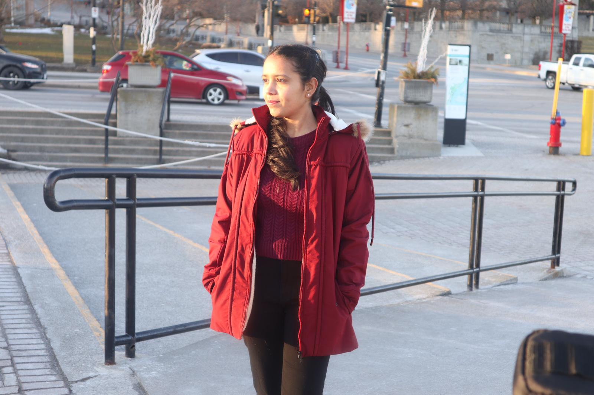

Love to Travel


My Bio
 Hloo everyone, My name is Amandeep kaur gill sidhu. I am from punjab,India.I born and brought up in Bathinda city of Punjab. From my childhood, i used to live with my maternal grandfather house, not with my parents, because of some financial crises, my parents send me there. That's why i love my grandfather more than my parents. Last year, in 2020, I lost my father, he died because of some disease. That was the mose terrible and weekest momment of my entire life. and also for my family. After few months of my father's demise, i got married.My husband is the pillar of my life.Last year in November 2020, i came to Canada for my further studies.
Education
10th Standard
I completed my 10th Standard in 2012 form Guru Nanak Dev Public School,Bathinda city of Punjab. I got 80% marks in it.
Diploma
From 2012 till 2015,I had done diploma in Computer Science from Regional Polytechnic College,Bathinda. I passed my diploma with good grades.B.tech
In 2015, I got admission in 2nd year of Becholar's of Technology in Information Technology stream. I completed this course in 2018 with good grades.
Post Graduation Course(Persuing)
Now, I am persuing my 2nd semester in Mobile Application Design and Development Course In Lambton College,Toronto.
Skills
- Ability to maintain professional environment.
- Excellent organizational and time management skills and the ability to work under pressure.
- Ability to quickly respond to changing work volume; high -energy level/speed.
- Strong ability to troubleshoot and problem-solve in fast paced environment
- Languages spoken - Hindi, English, Punjabi.
Contact
anugill4080@gmail.com